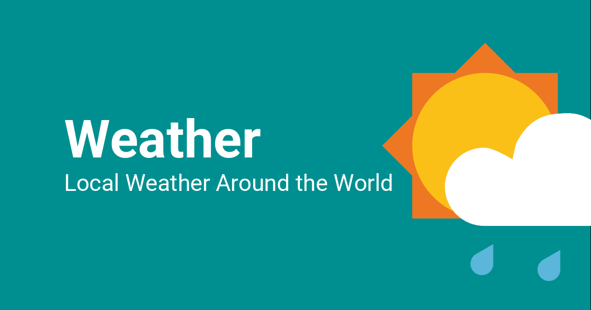

/*
  SFU Hackathan: Mountain Madness
  The Weatherman
  Hakim Bashe, Trevor Pinto, Sumeet Sara
 */

<!DOCTYPE html>
<html lang="en">
<head>
  <meta charset="UTF-8">
  <meta name="viewport" content="width=device-width, initial-scale=1.0">
  <meta http-equiv="X-UA-Compatible" content="ie=edge">
  <title>OpenWeatherMap Api</title>
  <link rel="stylesheet" href="style.css">
</head>
<body>
  	
  	<h1 class ="title">The Weatherman</h1>
    
    <div class="input">
      <input type="text" placeholder="Enter the city" class="input_text">
      <input type="submit" value="Submit" class="submit">
    </div>
  </div>

  <div class="container">
    <div class="card">
      <h1 class="name" id="name"></h1>
      <p class="temp"></p>
      <p class="clouds"></p>
      <p class="desc"></p>
    </div>
  </div>
<script src="app.js"></script>
</body>
</html>
